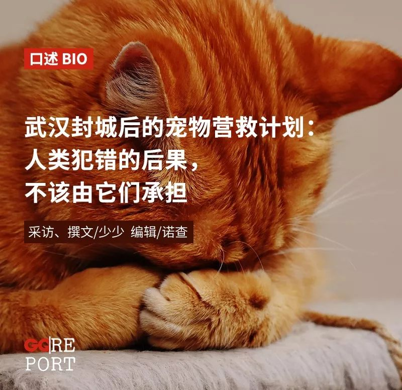
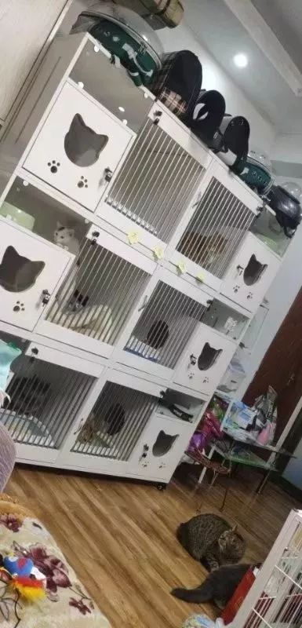
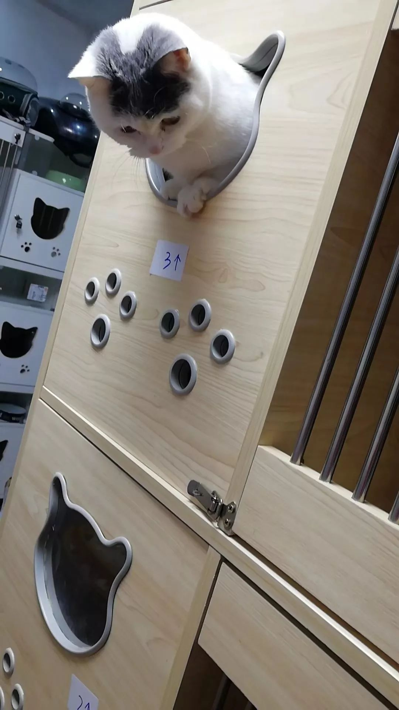
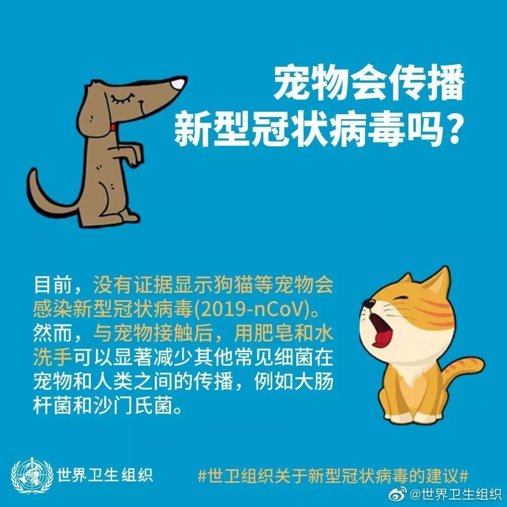

1月，民间花式抗疫大赏
原文链接 备份链接 8个关键词，构成了2020年1月这场牵涉全国疫情的一个侧面——一个个普通人，是如何度过了这个特殊的一月。 这次月度总结，我们决定记录一些疫情中令人啼笑皆非的小新闻，因为，这些看似微不足道的切片，构成了每个人在大事件中的 …

武汉封城，已有10日。近900万人滞留在城内，本地人蜗居在家不敢出门，外地人在陌生的城市里寻找住处，而同样滞留的，还有独居空房等待主人归来的宠物。
在“自救”的同时，人们也在积极营救宠物。李考拉是一个25岁的武汉女生，从2017年年底到现在，她帮助700多只流浪猫找到了新主人，还因为家里猫太多被爸妈嫌弃，搬出来单住。疫情来临后，她接收了30多只寄养猫咪，和爸妈一起跨越大半个武汉上门喂养独居猫咪，为不敢出门采购的猫主人配送猫粮。
值得注意的是，目前出现了少量宠物主因担心宠物会传染新型冠状病毒，因此将宠物遗弃、伤害。对此，世界卫生组织已迅速做出反应出面辟谣，目前没有证据显示猫狗等宠物会感染新型冠状病毒（2019-nCoV）。在此，我们也呼吁大家能够尊重、保护宠物的生存权。人类犯错的后果，不该由它们承担。
···············
❶
***60平，30只***
我今年25岁，武汉人，现在是一名初中老师。2017年，我刚刚大学毕业，想自己养流浪狗，就接触到了流浪动物救助的团体，大概是在年底收养了第一只流浪猫。其实我最开始很不喜欢猫，从小就特别害怕，觉得猫爪子特别吓人。可是当时在下大雪，猫猫在外面腿也瘸了，眼睛也瞎了，就觉得它很可怜，打算把它在家里关两个星期后放走，没有想到要养，只是想帮它把冬天给度过去。
我一开始是跟猫不接触的，把它关在阳台，隔两天去喂水，喂猫粮。关了两个星期，我就发现猫很好养很爱干净，也开始喜欢养猫了。后来我又收养了一只怀孕的母猫，就想到要做流浪猫的救助。
本来我没想过做猫咪寄养，是因为救助了猫咪，给它们找主人，很多主人过年不在武汉，就会问我，能不能把猫放到我这里来。他们是找我领养的，所以放我这里比较安心。我就买了一个猫咪柜，柜子里是小单间，一个单间里住一只猫。起初只接了8只猫，柜子里可以放6只，外面还可以散养两只，寄养到1月31号，每只猫50块钱一天。
1月23号，“封城”毫无征兆地到来，武汉市内交通停摆、离汉通道关闭。很多人来咨询我寄养，一开始我会都拒绝了，因为我要保证家里猫猫的安全，猫猫是应激性的，如果受了惊吓，是会把自己吓死的，我也不能收养太多只。
有个人找我想寄养，他也是在我这里领养了猫。那个小猫猫刚送出去一两个星期，大概才三个月。猫主人已经回老家过年了，他之前给了我钥匙，让我帮忙上门喂养。没有想到封城了，也不知道会封到什么时候，封城那么多天，小猫猫害怕了可能会应激死掉。我想着好不容易给它找到了领养，让它从流浪的猫变成了享福的猫，不能不帮帮它，就接到我家来了。
反正每天睡觉之前我都会想好，第二天不能再做这些事情了，但是第二天一醒，又在做这些事情。别人找你也是信任你，一开始想放弃是非常容易的事情，但现在我的微信上已经有很多人了，关于动物的一点风吹草动，都会有很多人来找我，所以想放弃也没法放弃了。
现在家里已经寄养了30多只猫。之前救助流浪猫的时候，家里也有过这么多猫，但总有猫被领走，不会每天都这么多。有的猫运气好，刚捡回来，就被领养了。
我家只有60平，现在却住了我和30多只猫咪。每天铲屎的时候，我都会让猫出来放风，但因为地方小，只能一只只地放。刚开始的时候猫会叫，但现在只有看到我的时候才会叫。晚上我睡觉的时候，大家也安静了，只有发情了的会叫。头几天我被吵得睡不着，但过了这么多天，我也习惯了。
因为有养在柜子外面的猫，每天早上起来，家里都是一片狼藉，桌子上的所有东西都在地上。但是我不生气，因为它们是猫，不是人，不是故意的。
寄养的猫吃的是主人带过来的猫粮。每只猫吃的都不一样，但因为“封城”，再加上寄养是把猫关在猫咪柜里，猫吃的变多了，现在大家的猫粮差不多都吃完了。
疫情来临之前，我囤了很多倍内菲猫粮，当时只是因为便宜，六千块可以买二十几包。现在封城了，家里至少要吃十几种猫粮，采购很不方便。1月29号，我给主人们发了通知，在各自的猫粮吃光后免费提供倍内菲猫粮。
猫砂也要省着用。以前我给每只猫会铺3-5厘米厚的猫砂，但是现在我只能铺一两厘米。即使这样用得还是很快，沙发上已经摆满了猫砂的空袋子。
现在寄养价格很贵，黑心的宠物店已经涨到了一天200块，均价也基本上是100块一只猫。但是我没有涨价，两只猫一起寄养的也只加10块，不想因为钱的事伤了感情。这几天还有不想养猫了的人到我这来找新主人，我估计是因为担心封城太久，交不起寄养费，索性就不要了。但现在我也找不到想养猫的人，就算有人想领养，也不敢出门。我只能走温情路线，劝想弃养的人先留着猫。
对在我家寄养的猫，我也已经做好了最坏的打算。可能有主人交不起钱、短时间不交钱，甚至最后连猫都不要。我会好好养着它们的，但我不希望发生这样的事情。
我已经和这30多只猫产生感情了。猫咪们刚开始都很害怕我，我一靠近它们，它们就冲我哈气，但现在已经会冲我撒娇了。我铲屎的时候，它们喜欢扒拉我，我会趁这个机会检查它们的爪子，如果指甲长了，我就给它们修剪。看着它们从躲着我到亲近我，我感觉挺暖心的。
在解决猫猫问题的同时，我还自己掏钱捐了6000个口罩，找厂家去对接，大概跑了100多公里才把口罩拿到。我不是只关心动物，我也关心人。可能也有些人会说“人的生命比猫重要”什么的，如果在平常的话，这是不负责任的表现，但是在灾难面前你怎么选，我没办法去指责你。

李考拉家的寄养猫咪，图片由受访者提供
❷
***3天，19只***
疫情还不严重的时候，我接了19家上门喂养，就是给主人不在家的猫咪喂食、铲屎，50块一次。我住在青山区，这19家有在江岸区的，有在江夏区的，最远的离我家40多公里。
封城那天，我打算去喂猫，我妈不想让我去。她问我，能不能不去？都封城了，说明疫情很严重，我收的喂养费还抵不上开车过去的油钱。可我已经答应别人了，要言而有信。猫就像人一样，如果没有补给的话，待两三天就不舒服了。
毕业后我在外面租了个房子，后来搬回家，我妈看我猫太多了，又把我赶出来了。今年过年，我是和父母分开住的，家里猫太多了，每天都要做两次清洁，所以要在这边住。
我爸妈对收养动物的态度，从非常抗拒，转变到有一点点支持我。我第一次感觉到他们态度的变化，是我没有经过爸妈同意，直接往家里放了四条小狗。我妈说家里就这么大一点，你还要放狗，我说外面在下雨，如果狗狗不放回来的话，可能就死了。
我妈说那好吧，限你一个星期之内把领养找到，不准没送出去又把新的带回来。送出去那一天，我把狗送到江夏，路上又偷偷带了两只回来。带回家我妈说，怎么又带了，不是说好了吗？我就说家里这些不是都送完了吗，我妈也妥协了，说我“无缝衔接”。就是这样每天做一点点小让步，后来我妈还会帮忙找领养，会在微信上催我，说几栋又有一只流浪猫了，你想想办法啊。现在封城了，我妈还每天戴着口罩出去喂流浪猫。
所以上门喂猫的事，我妈也没有特别激烈地反对，她就说好吧，我跟你一起去吧。为了这19家的猫，我爸妈开车载着我跑了3天。其实我也会有点担心附近可能有传染源什么的，但是一直在想如果不去的话，猫可能就饿死了，只要有这个念头，那些问题就都还好了。为了预防，我们也带了酒精，隔几分钟就喷一下。
1月23号是第一天，我们晚上六点出发，因为觉得人会少一些。出发前，我们在楼下的小卖部买了30多个一次性纸碗、10多桶1升的矿泉水和一些垃圾袋。那时候还不知道疫情会这么严重，我们都只戴了口罩。
我们先去了离得比较远的江夏区，因为担心第二天会有新的政策，万一封路或者机动车禁行就过不去了，近一些的随时都可以去。那天晚上很黑，街上一个人都没有。
平时，如果你没有单元门的门禁，5-10分钟就可以遇到回来的人帮你开门。但是封城之后，没有人了。因为没有门禁，我们在一家楼下等了半个小时，才等来人。
进门之后，我会把主人家剩下的所有猫粮都倒在纸碗里，铺在地板上。一般是5-7天的量，能分成十多个纸碗。矿泉水是我和我妈一起拎上来的，也倒在碗里。我把猫砂也换了，但不能像平时一样，保证一天一换。我只能跟主人们说，没有办法，能不饿死就先不饿死，没法保证你们回来家里还是干干净净的。其实很多人家都比较乱，甚至有一家，走的时候连厕所都没冲。我妈又很较真，恨不得帮别人把被子都叠了。
挨家挨户地跑，一家要搞一个多小时。上门喂养的第一天，我们凌晨一点才回到家。我把外穿的衣服脱下来消了毒，才发现里面衣服全湿了。
做好这件事，我跟这些主人拉了一个群，发通知说我先在家里给你们放置3到5天的猫粮，后面怎么办，大家一起想想办法。主要是我害怕有可能会封区，之前非典就有过这样的情况，如果封区，我就没法上门了，现在我已经把这19家都匹配到他们小区附近的人喂养了。

李考拉家的寄养猫咪，图片由受访者提供
❸
*********平台*********
把这19家都安顿好了之后，我就不再接上门喂养了，改成为需要帮助的主人们“牵线搭桥”。
我有4000多个微信好友，因为之前做流浪猫救助，很多人在我这领养过猫、买过猫咪用品。现在封城了，回不来的主人没法喂猫，我就帮他们匹配愿意帮忙的人。在我这领养出去的猫，我都会拉一个小群，方便对接，这些群有些就发展成了两三百人的大群。我查了当年SARS时北京的政策，担心武汉以后也会封小区，所以只匹配同小区的喂养。
匹配的时候，我一边私信我知道地址的人，一边在这些领养群里不停地问。现在，我每天早上睁开眼就开始看消息，一直到晚上一两点钟才处理完。除了给家里30多只猫铲屎、消毒和喂食，我所有的时间都在看消息、发消息。因为一直盯着手机看，最近我的眼睛不是很舒服，不知道是不是得了青光眼。
匹配成功之后，还要解决钥匙的问题。有的主人会把钥匙用顺丰寄过来，但更多的是找开锁公司换个锁芯，也不会把门破坏了。开锁前我会问猫主人，你们家有没有什么贵重物品，是猫命重要还是东西重要？他们就说猫命重要一些。之前的19家，我为他们找好了愿意帮忙的人，其中有个人来我家拿钥匙，还塞了一包口罩给我。
25号的时候，一个之前在我这领养过猫咪的护士告诉我，她要“上前线”了，可能不会回家住，没办法喂猫了。我把求助信息在几十个群里都发了个遍，才找到了愿意帮忙的人。
也有不着急的主人。我帮他找到了人、谈好了价格，还专门找了人把钥匙从我家带到喂养人的家，花了很多精力。我问主人可不可以明天上门，他两天后回我：已经处理好了，不需要我帮忙。我就被气哭了：明明是别人的猫，反而是我在操心。
除夕是封城的第二天。那天晚上，很多主人都很着急，担心自己家的猫没人喂。我忙到了凌晨两三点钟，一直在帮忙匹配和找人开锁，没顾得上吃饭，凑合吃了点泡面和薯片。家里没有电视，我也没办法看春晚。我一直在看消息，零点的时候都没有注意到。
因为没想到会封城，很多主人家都没有猫粮了。1月29号，我联系上武汉郊区的仓库和配送公司，建了一个送货上门的群。猫粮和猫砂是最紧缺的。我在群里贴出来了一张报价单，所有产品都不溢价，也不收配送费。
群里现在有200多个客户，还不断有人向我咨询，但我决定不能再加人了，不能让配送小哥们冒着生命危险一直在外面跑。

群里也有一些很自私的人。有个猫主人只买了一件东西就要求送货上门，我就生气了：不是钱多钱少的问题，是你尊不尊重别人的问题，你把人家配送小哥的生命当成什么？还有人在群里买了猫粮，但是不在武汉，希望配送小哥帮他喂一下猫。配送小哥没养过猫，一天要送40多家，我告诉这个客户，如果小哥忙忘了就算了，他回我，你们智商是有问题吗？喂个猫都不会。我真的又想哭又想笑。
爸妈起初不支持我救助流浪动物，一直劝我：少养一点、少养一点。可我听不进去，两年多救助了700多只小动物。我平日里上班忙，总是我爸来遛狗，我妈偶尔从我家里拿些猫粮出去流浪猫。他们嘴上劝我别做了，实际却在帮我，这次上门喂养猫咪，我爸开车，我和我妈上门，如果没有他们，我一个人怎么喂的过来。前天晚上，我妈告诉我，爸爸主动报名参加雷神山医院的建设工程了。收到消息的那一瞬间，我真的很想哭。我还年轻，怎么折腾自己都没关系，但是我爸爸老了，经不起折腾。
我和30多只猫的主人们拉了一个微信群，群名叫“春田花花幼儿园”，每天给他们发猫猫们的小视频报平安。希望疫情能快点过去，武汉能早日解禁，猫咪们也能早点见到主人。
应受访者要求，李考拉为化名
GQ报道正在征集疫情防治的相关采访信息，如果您身处疫区、受到疫情影响，或是了解对疫情防治有促进作用的各类信息，欢迎随时与我们联系！
无论您是医护人员、患者及家属、疑似患者、物资供应方、运输方、志愿者、疫区服务业人员、了解疫情知识的专业人士……我们随时准备听到您的声音！
您可以在本文评论区、公众号后台留言，或发送邮件至gqreport@163.com 留下您的联系方式和您能够提供的信息摘要，我们会第一时间与您取得联系。
让我们一起努力，共渡难关！

在公众号后台回复彩蛋，送你一个彩蛋
采访、撰文：少少
编辑：诺查
监制：何瑫
运营编辑：肖呱呱


原文链接 备份链接 8个关键词，构成了2020年1月这场牵涉全国疫情的一个侧面——一个个普通人，是如何度过了这个特殊的一月。 这次月度总结，我们决定记录一些疫情中令人啼笑皆非的小新闻，因为，这些看似微不足道的切片，构成了每个人在大事件中的 …
原文链接 备份链接 1月31日出门健身的武汉市民（图片由郭晶提供） 这是我的朋友郭晶的日记。 记录了封城期间在武汉独居的外地女性的真实生活体验和心理感受。 这些文字见证了郭晶如何从适应突发危机到重建日常生活，再到尝试帮助他人的过程。 之前 …
原文链接 备份链接 1⁄7 *不为这座城市做点什么，最后，可能这座城市就完了……* 2020年1月30日 @雷锋小杨 坐标：武汉 大家就叫我雷锋小杨吧，我也不想留名。 我是武汉人，做酒店管理工作。我们的酒店在远城区，现在还在营 …
原文链接 备份链接 除夕前夜，因疫情蔓延，武汉宣布封城，机场、火车站、市内公共交通停闭，江城困围。封城以来，许多武汉人都承受着分离的苦楚，担心年迈独居的父母买不到菜，惋惜爱人最需要的时却不能陪在身边，常年在外工作的父亲错过仅有的看望孩子的 …
原文链接 备份链接 封城已过去一周，在这个谈武汉人、湖北人色变的时候，我们想要好好看一看他们。今天我们挑选的几篇读者来稿，围绕着湖北的武汉和黄冈，讲述他们在旋涡和风暴中心的日子。他们有些住在城市，有些住在乡村和小镇。环境的不同给了他们不 …